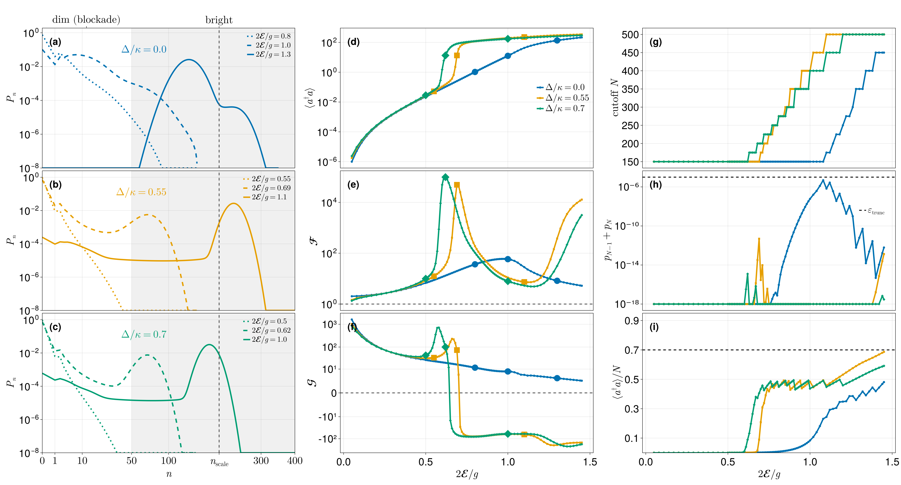

Driven-dissipative Jaynes–Cummings model
A coherently driven cavity coupled to a two-level atom, with cavity loss only. In the frame rotating at the drive frequency,
\[H = -\Delta\,(a^\dagger a + \sigma_+\sigma_-) + g\,(a^\dagger\sigma_- + a\,\sigma_+) - \mathcal{E}\,(a + a^\dagger), \qquad \dot\rho = -i[H,\rho] + \kappa\,\mathcal{D}[a]\rho ,\]
with $\Delta$ the common cavity/atom detuning from the drive, $g$ the Jaynes–Cummings coupling, $\mathcal{E}$ the drive amplitude, and $\kappa$ the cavity linewidth (which sets the unit of energy throughout).
We count the cavity emission $\kappa\,a\rho a^\dagger$ — a single monitored jump with weight $+1$ — and compute the first three cumulants of the emitted-photon counting statistics:
\[\frac{c_1}{\kappa} = \langle a^\dagger a\rangle, \qquad \mathcal{F} = \frac{c_2}{c_1}, \qquad \mathcal{G} = \frac{c_3}{c_2^{3/2}} ,\]
the count rate, the Fano factor, and the skewness. Sweeping the dimensionless drive $x = 2\mathcal{E}/g$ at fixed $g/\kappa = 14$ crosses the photon-blockade breakdown. On the detuned cuts the cavity becomes bimodal — a dim, blockaded state coexisting with a bright, lasing-like one — and the emission is strongly intermittent, which the higher cumulants register far more sharply than the mean does.
The bright branch carries hundreds of photons, so the Fock cutoff must grow with the drive. At $N = 500$ the Liouvillian is a $\sim\!10^6 \times 10^6$ sparse non-Hermitian matrix: forming an LU factorization of it is hopeless, and every point needs a steady state and three Drazin solves. This page is a worked example of the iterative backend — in particular of building one incomplete-LU factorization per parameter neighbourhood and using it for everything.
This page is a self-contained condensation of the companion notebook driven_dissipative_jaynes_cummings.ipynb, which reproduces Fig. 2 of the manuscript.
Setup
using QuantumToolbox
using QuantumFCS
using Krylov, IncompleteLU # enables the iterative backend
using SparseArrays, LinearAlgebra, PrintfThe results on this page were produced with QuantumToolbox 0.28. Nothing in QuantumFCS depends on that version — the package only reads .data off whatever operators you pass — but QuantumToolbox's own QuantumObject(...; type = Operator, dims = ...) constructor changed in later 0.4x releases (Operator became a type rather than a singleton value, and a super-operator's .dimensions now reports Liouville-space dimensions). On a newer QuantumToolbox, construct the state with that release's spelling and pass the Hilbert-space factor sizes — here (N + 1, 2) — instead of L.dimensions.
The operators are built once for a given Fock cutoff N. The two Hamiltonian pieces that a sweep rescales — the Jaynes–Cummings coupling and the drive — are returned separately, so a sweep can rebuild H cheaply while the operators stay fixed.
const g = 14.0 # Jaynes-Cummings coupling, in units of κ
const κ = 1.0 # cavity linewidth sets the unit
# Cavity + atom operators at Fock cutoff N (Hilbert dimension 2(N+1)).
function jc_operators(N)
a = tensor(destroy(N + 1), qeye(2))
sm = tensor(qeye(N + 1), sigmam())
return (; a, sm,
Hjc = a' * sm + a * sm', # a†σ₋ + aσ₊
Hdr = -(a + a'), # -(a + a†)
n_op = a' * a,
detuning_op = a' * a + sm' * sm)
end
# The Hamiltonian at one (Δ, E) point is a linear combination of those pieces.
jc_hamiltonian(ops, Δ, g, E) = -Δ * ops.detuning_op + g * ops.Hjc + E * ops.Hdr
N_demo = 150
ops = jc_operators(N_demo)
cavity_loss = sqrt(κ) * ops.a # the single jump operator, and the counted channel
@printf("cutoff N = %d -> Hilbert dim = %d, Liouvillian %d x %d\n",
N_demo, 2 * (N_demo + 1), (2 * (N_demo + 1))^2, (2 * (N_demo + 1))^2)cutoff N = 150 -> Hilbert dim = 302, Liouvillian 91204 x 91204One point, start to finish
This is the whole QuantumFCS call sequence for a single drive point.
trace_constrained_systemreplaces the singular condition $\mathcal{L}\rho = 0$ with a non-singular linear system by imposing $\operatorname{tr}\rho = 1$.trace_constrained_steadystatesolves it with GMRES preconditioned by a shifted incomplete-LU factorization, and returns that factorization inss.Pl.LindbladFCSwithPl = ss.Plhands the same factorization to the Drazin-inverse solves inside the cumulant recursion.
Building the ILU is a near-complete factorization and dominates the cost of a point, so step 3 is what makes the point cost one factorization rather than two. See Reusing a preconditioner for the general rule.
The counting data is the monitored jump list mJ = [√κ a] with weight nu = [1.0]; nC = 3 asks for the first three cumulants.
Δ_demo, x_demo = 0.55, 0.60
E_demo = x_demo * g / 2
H = jc_hamiltonian(ops, Δ_demo, g, E_demo)
L = liouvillian(H, [cavity_loss])
sys = trace_constrained_system(L)
# --- steady state (also produces the preconditioner we reuse below) ----------
ss = trace_constrained_steadystate(sys;
method = :iterative,
τ = 1e-1, # ILU drop tolerance
shift_factor = 1e-6, # diagonal shift keeping the factorization stable
rtol = 1e-10, atol = 1e-14, itmax = 120, memory = 60)
ρss = QuantumObject(ss.rho_ss; type = Operator, dims = L.dimensions)
n_ss = real(expect(ops.n_op, ρss))
# --- cumulants, reusing the steady-state ILU as the Drazin preconditioner ----
cumulants = fcscumulants_recursive(LindbladFCS(
L = SparseMatrixCSC{ComplexF64,Int}(sys.L),
mJ = [cavity_loss], # monitored jump: cavity emission
rho_ss = ρss,
nu = [1.0], # counting weight
nC = 3,
method = :iterative,
Pl = ss.Pl, # <-- the factorization built for the steady state
rtol = 1e-8, itmax = 300, memory = 60))
c1, c2, c3 = cumulants
@printf("Δ/κ = %.2f, x = 2E/g = %.2f, N = %d\n", Δ_demo, x_demo, N_demo)
@printf(" ⟨a†a⟩ = %.10g\n", n_ss)
@printf(" c₁ = %.10g Fano c₂/c₁ = %.6g\n", c1, c2 / c1)
@printf(" c₂ = %.10g skew c₃/c₂^{3/2} = %.6g\n", c2, c3 / c2^1.5)
@printf(" steady state converged: %s in %d iterations\n",
ss.stats.converged, ss.stats.iterations)
@printf(" identity |c₁/(κ⟨a†a⟩) − 1| = %.3e\n", abs(c1 / (κ * n_ss) - 1))Δ/κ = 0.55, x = 2E/g = 0.60, N = 150
⟨a†a⟩ = 0.1085414737
c₁ = 0.1085414737 Fano c₂/c₁ = 22.9967
c₂ = 2.496090669 skew c₃/c₂^{3/2} = 45.9077
steady state converged: true in 11 iterations
identity |c₁/(κ⟨a†a⟩) − 1| = 0.000e+00The last line is an exact identity, not a tolerance: for a single monitored loss channel of weight $+1$, the first cumulant of the counting statistics is the photon loss rate,
\[c_1 = \kappa\,\langle a^\dagger a\rangle .\]
It couples the FCS result to a quantity computed independently from $\rho_\text{ss}$, so it detects a mis-solved Drazin system, a mis-specified weight, and a non-converged steady state alike. It is the acceptance gate applied at every point of the sweeps below.
Choosing the Fock cutoff
A single cutoff for the whole sweep would be wasteful at low drive and wrong at high drive. Instead each point gets its own cutoff, chosen before solving from a semiclassical estimate $n$ of the bright-branch photon number and padded for the coherent-state width:
\[N_{\text{hard}} = n + \texttt{pad\_sigma}\,\sqrt{n} + \texttt{pad\_abs}, \qquad N_{\text{target}} = \max\!\left(N_{\text{hard}},\; n/\texttt{occ\_max}\right),\]
rounded up to the next tier of a fixed ladder. The $\sqrt{n}$ term is the coherent-state truncation criterion: a cutoff at or above $N_\text{hard}$ resolves the mean, the Fano factor, and the boundary tail. The extra $n/\texttt{occ\_max}$ headroom exists purely for $c_3$, which — as the convergence table below shows — is roughly two orders of magnitude more truncation-sensitive than $c_1$.
On resonance the estimate is closed-form,
\[n(\Delta = 0) = \frac{\max\!\left(4\mathcal{E}^2 - g^2,\, 0\right)}{\kappa^2},\]
which is zero below the breakdown drive $x = 1$: there is no bright branch to accommodate, and the absolute floor pad_abs sets the cutoff. Off resonance the bright branch is the largest root of the neoclassical state equation $u\,[\kappa_C^2 + D_s(u)^2] = \mathcal{E}^2$ with the effective detuning $D_s(u) = \Delta - s\,\mathrm{sgn}(\Delta)\,g^2/\sqrt{\Delta^2 + 4g^2u}$ over both branches $s = \pm1$; the companion repository's jc_model.jl solves it by bisection.
const TIERS = (150, 175, 200, 225, 250, 275, 300, 350, 400, 450, 500)
const OCC_MAX = 0.50
const PAD_ABS = 25.0
# Semiclassical bright-branch photon number, resonant cut (Δ = 0).
jc_bright_n(g, E; κ = 1.0) = max(4 * abs2(E) - abs2(g), 0.0) / abs2(κ)
# Smallest tier meeting both the coherent-width requirement and the occupation
# aspiration; `clamped` marks a point the ladder cannot resolve at all.
function jc_cutoff(n_est; pad_sigma = 6.0, pad_abs = PAD_ABS, occ_max = OCC_MAX)
n = max(n_est, 0.0)
hard = n + pad_sigma * sqrt(n) + pad_abs
target = max(hard, n / occ_max)
idx = findfirst(≥(target), TIERS)
return (N = idx === nothing ? last(TIERS) : TIERS[idx],
hard = hard, target = target, clamped = hard > last(TIERS))
end
function jc_cutoff_table(xs; pad_sigma)
println(" x n_est N_hard N_target N headroom (N−n)/√n")
for x in xs
n = jc_bright_n(g, x * g / 2; κ = κ)
c = jc_cutoff(n; pad_sigma = pad_sigma)
@printf("%6.2f %10.3f %10.1f %10.1f %6d %18s\n",
x, n, c.hard, c.target, c.N,
n > 0 ? @sprintf("%.1f", (c.N - n) / sqrt(n)) : "— (no bright branch)")
end
end
println("Resonant cut (Δ = 0), pad_sigma = 14:")
jc_cutoff_table((0.30, 0.70, 1.00, 1.10, 1.25, 1.45); pad_sigma = 14.0)Resonant cut (Δ = 0), pad_sigma = 14:
x n_est N_hard N_target N headroom (N−n)/√n
0.30 0.000 25.0 25.0 150 — (no bright branch)
0.70 0.000 25.0 25.0 150 — (no bright branch)
1.00 0.000 25.0 25.0 150 — (no bright branch)
1.10 41.160 156.0 156.0 175 20.9
1.25 110.250 282.2 282.2 300 18.1
1.45 216.090 446.9 446.9 450 15.9Two things are worth noting about this schedule. First, points sharing a cutoff form a segment, and a segment is exactly the span over which one ILU factorization gets reused — the ladder is therefore a performance decision as much as an accuracy one. Second, pad_sigma is tuned per detuning cut in the manuscript run: the resonant cut carries small photon numbers across most of the drive range, and the $\sigma$-headroom $(N-n)/\sqrt{n}$ that bounds the $c_3$ truncation bias is smallest precisely where $n$ is small. Giving the resonant cut pad_sigma = 14 rather than the default 6 lifts it to $\sim\!16\sigma$ and removes a $c_3$ artefact near $x \approx 1.25$, while leaving the detuned cuts — already well resolved at their higher $N$ — untouched.
The sweep
Three mechanisms make a long sweep affordable, and all three are visible in the loop below:
- preconditioner reuse — the shifted ILU is built for the first point of a segment and passed back in as
Plfor every later point. Building it dominates the cost of a point, so this is the difference between minutes and hours. - warm starting — each solve starts GMRES from the previous point's steady state via
u0, since neighbouring drive points have similar states. - adaptive rebuild — as the drive moves the state, a reused factorization eventually goes stale. The tell is the iteration count creeping up, or GMRES failing outright, and that is precisely when we rebuild. Reuse while it works; rebuild only when it stops working.
The same Pl is then injected into the cumulant solve, so a point costs one factorization in total.
The preconditioner and the warm start are carried in local variables across iterations. At top level those would be globals, which under Julia's soft scope rules is both type-unstable and markedly slower. Putting the loop in a function also makes a segment re-runnable at will.
function jc_drive_segment(Δ, x_values, N; g, κ = 1.0,
ilu_tau = 1e-1, shift_factor = 1e-6, nC = 3,
itmax = 120, fallback_itmax = 300, rebuild_niter = 80)
ops = jc_operators(N)
loss = sqrt(κ) * ops.a
Pl = nothing # segment preconditioner: built on the first point, then reused
u_prev = nothing # warm start carried from the previous drive point
rows = NamedTuple[]
for x in x_values
E = x * g / 2
t0 = time_ns()
H = jc_hamiltonian(ops, Δ, g, E)
L = liouvillian(H, [loss])
sys = trace_constrained_system(L)
ss = trace_constrained_steadystate(sys;
method = :iterative,
Pl = Pl, # reuse the segment factorization (nothing ⇒ build it)
u0 = u_prev, # warm start from the previous point
τ = ilu_tau,
shift_factor = shift_factor,
rtol = 1e-10, atol = 1e-14, itmax = itmax, memory = 60)
# As the drive moves the state, a reused factorization eventually goes
# stale: GMRES starts needing many iterations, or stops converging. That
# is the signal to rebuild it — and only then.
rebuilt = false
if !ss.stats.converged || ss.stats.iterations > rebuild_niter
ss = trace_constrained_steadystate(sys;
method = :iterative,
Pl = nothing, # force a fresh factorization
u0 = vec(Matrix(ss.rho_ss)),
τ = ilu_tau,
shift_factor = shift_factor,
rtol = 1e-10, atol = 1e-14, itmax = fallback_itmax, memory = 60)
rebuilt = true
end
Pl = ss.Pl # keep it for the next point
u_prev = vec(Matrix(ss.rho_ss))
ss_seconds = (time_ns() - t0) / 1e9
ρss = QuantumObject(ss.rho_ss; type = Operator, dims = L.dimensions)
n = real(expect(ops.n_op, ρss))
t1 = time_ns()
c = fcscumulants_recursive(LindbladFCS(
L = SparseMatrixCSC{ComplexF64,Int}(sys.L),
mJ = [loss], rho_ss = ρss, nu = [1.0], nC = nC,
method = :iterative, Pl = Pl, # same factorization drives the Drazin solve
rtol = 1e-8, itmax = 300, memory = 60))
fcs_seconds = (time_ns() - t1) / 1e9
current_check = c[1] / (κ * n)
push!(rows, (; Δ, x, N, n, c1 = c[1], c2 = c[2], c3 = c[3],
Fano = c[2] / c[1], current_check, rebuilt,
ss_iterations = ss.stats.iterations, ss_seconds, fcs_seconds))
@printf("Δ=%.2f x=%.2f N=%3d | n=%10.4g F=%8.4g | c₁/(κn)−1=%8.1e | ss %5.2fs fcs %5.2fs%s\n",
Δ, x, N, n, c[2] / c[1], current_check - 1, ss_seconds, fcs_seconds,
rebuilt ? " [ILU rebuilt]" : "")
flush(stdout)
end
return rows
endRun it on the resonant cut, where the whole low-drive range shares one cutoff — a genuine segment of the production sweep, in about a minute:
x_sweep = collect(0.05:0.05:0.70)
N_sweep = maximum(jc_cutoff(jc_bright_n(g, x * g / 2; κ = κ); pad_sigma = 14.0).N
for x in x_sweep)
segment = jc_drive_segment(0.0, x_sweep, N_sweep; g = g, κ = κ)
@printf("\ntotal: %d points, %.1f s | worst |c₁/(κn)−1| = %.2e\n",
length(segment),
sum(r.ss_seconds for r in segment) + sum(r.fcs_seconds for r in segment),
maximum(abs(r.current_check - 1) for r in segment))Δ=0.00 x=0.05 N=150 | n= 7.881e-07 F= 2.023 | c₁/(κn)−1=-2.2e-16 | ss 1.24s fcs 0.78s
Δ=0.00 x=0.10 N=150 | n= 1.299e-05 F= 2.09 | c₁/(κn)−1=-4.4e-16 | ss 0.61s fcs 0.74s
Δ=0.00 x=0.15 N=150 | n= 6.909e-05 F= 2.211 | c₁/(κn)−1= 0.0e+00 | ss 0.99s fcs 0.74s
Δ=0.00 x=0.20 N=150 | n= 0.0002343 F= 2.396 | c₁/(κn)−1= 2.2e-16 | ss 1.49s fcs 1.39s
Δ=0.00 x=0.25 N=150 | n= 0.0006273 F= 2.663 | c₁/(κn)−1= 0.0e+00 | ss 3.08s fcs 1.54s
Δ=0.00 x=0.30 N=150 | n= 0.00146 F= 3.038 | c₁/(κn)−1=-5.6e-16 | ss 1.93s fcs 2.71s
Δ=0.00 x=0.35 N=150 | n= 0.003108 F= 3.563 | c₁/(κn)−1=-4.4e-16 | ss 3.13s fcs 4.24s
Δ=0.00 x=0.40 N=150 | n= 0.006254 F= 4.295 | c₁/(κn)−1=-1.1e-16 | ss 2.44s fcs 5.90s
Δ=0.00 x=0.45 N=150 | n= 0.01214 F= 5.321 | c₁/(κn)−1= 2.2e-16 | ss 7.08s fcs 0.97s [ILU rebuilt]
Δ=0.00 x=0.50 N=150 | n= 0.02307 F= 6.764 | c₁/(κn)−1= 0.0e+00 | ss 1.73s fcs 1.08s
Δ=0.00 x=0.55 N=150 | n= 0.0434 F= 8.802 | c₁/(κn)−1= 0.0e+00 | ss 1.69s fcs 2.80s
Δ=0.00 x=0.60 N=150 | n= 0.08138 F= 11.67 | c₁/(κn)−1=-8.9e-16 | ss 1.73s fcs 2.58s
Δ=0.00 x=0.65 N=150 | n= 0.1529 F= 15.66 | c₁/(κn)−1= 0.0e+00 | ss 2.39s fcs 5.38s
Δ=0.00 x=0.70 N=150 | n= 0.2888 F= 21.09 | c₁/(κn)−1=-1.8e-15 | ss 3.49s fcs 7.18s
total: 14 points, 71.1 s | worst |c₁/(κn)−1| = 1.78e-15The identity holds to roundoff at every point. The steady-state time drops after the first point — that one paid for the factorization — and rises again only at x = 0.45, where the reuse heuristic decided the factorization had drifted too far and rebuilt it. Note also that the Fano factor is already at $\mathcal{F} \approx 21$ by the end of this range: emission on the approach to breakdown is enormously super-Poissonian, and this is the low-drive tail, not the transition.
Numerical reliability: why the boundary tail is not enough
The conventional truncation diagnostic is the boundary population $p_{N-1} + p_N$ of the cavity Fock distribution. In the coexistence region it is actively misleading: the truncated ladder simply cannot host the bright state, so the solver locks onto the dim branch, converges beautifully, and leaves no trace in the boundary population.
The honest check is cross-cutoff agreement of the cumulants. Recomputing one point on a ladder of cutoffs:
function jc_cutoff_convergence(Δ, x, cutoffs; g, κ = 1.0)
rel(new, old) = old === nothing ? NaN : abs(new / old - 1)
prev = nothing
println(" N c₁ c₂ c₃ Δc₁/c₁ Δc₂/c₂ Δc₃/c₃ p_{N-1}+p_N")
for N in cutoffs
ops = jc_operators(N)
H = jc_hamiltonian(ops, Δ, g, x * g / 2)
L = liouvillian(H, [sqrt(κ) * ops.a])
sys = trace_constrained_system(L)
ss = trace_constrained_steadystate(sys;
method = :iterative, τ = 1e-1, shift_factor = 1e-6,
rtol = 1e-10, atol = 1e-14, itmax = 300, memory = 60)
ρ = QuantumObject(ss.rho_ss; type = Operator, dims = L.dimensions)
c = fcscumulants_recursive(LindbladFCS(
L = SparseMatrixCSC{ComplexF64,Int}(sys.L),
mJ = [sqrt(κ) * ops.a], rho_ss = ρ, nu = [1.0], nC = 3,
method = :iterative, Pl = ss.Pl,
rtol = 1e-8, itmax = 300, memory = 60))
pn = max.(real.(diag(ptrace(ρ, 1).data)), 0.0); pn ./= sum(pn)
@printf("%5d %13.8g %13.8g %13.8g %8.1e %8.1e %8.1e %12.2e\n",
N, c[1], c[2], c[3],
rel(c[1], prev === nothing ? nothing : prev[1]),
rel(c[2], prev === nothing ? nothing : prev[2]),
rel(c[3], prev === nothing ? nothing : prev[3]),
sum(pn[end-1:end]))
prev = c
end
end
jc_cutoff_convergence(0.55, 0.60, (100, 150, 200, 250); g = g, κ = κ) N c₁ c₂ c₃ Δc₁/c₁ Δc₂/c₂ Δc₃/c₃ p_{N-1}+p_N
100 0.10854147 2.4960861 181.03752 NaN NaN NaN 0.00e+00
150 0.10854147 2.4960907 181.04067 6.0e-08 1.8e-06 1.7e-05 0.00e+00
200 0.10854148 2.4960932 181.04257 3.5e-08 1.0e-06 1.1e-05 1.11e-44
250 0.10854147 2.4960911 181.04105 2.8e-08 8.4e-07 8.4e-06 0.00e+00Two things to read off this table.
First, the cumulants converge at very different rates. One cutoff step moves $c_1$ by $\sim\!10^{-8}$, $c_2$ by $\sim\!10^{-6}$, and $c_3$ by $\sim\!10^{-5}$ — roughly two orders of magnitude between the first and third cumulant. That ordering is why the scheduler buys headroom aimed at $c_3$: a cutoff that has clearly converged the count rate has not necessarily converged the skewness.
Second — and this is the point — the boundary tail is at (or numerically indistinguishable from) zero for every cutoff in the table, while $c_3$ is still moving. The conventional diagnostic reports "fully converged" throughout. Trusting it would mean stopping at the smallest cutoff and quietly carrying a $10^{-5}$ bias in the skewness.
The manuscript figure

The published figure runs the sweep above over a graded ~89-point drive grid on three detuning cuts $\Delta/\kappa \in \{0, 0.55, 0.70\}$, with cutoffs climbing to $N = 500$ — about an hour, and several GB of memory at the deepest points. It shows:
- (a–c) the cavity Fock distributions $P_n$ at three drives per cut; the dim/bright bimodality is directly visible on the detuned cuts;
- (d–f) the count rate $c_1/\kappa$, the Fano factor $\mathcal{F}$, and the skewness $\mathcal{G}$;
- (g–i) the reliability diagnostics recorded per point during the sweep: the cutoff actually used, the truncation tail $p_{N-1}+p_N$ against $\varepsilon_{\text{trunc}}$, and the occupation $\langle a^\dagger a\rangle / N$.
The full production pipeline — the detuned semiclassical root-finding, the per-cut pad_sigma, the per-point retry on a failed acceptance gate, and the figure routines — lives in the companion repository QuantumFCS-Notebooks.
See also
- Circuit-QED quantum heat engine — the same iterative machinery with several monitored currents sharing one prepared solver.
- Drazin solvers — the backends, their knobs, and the preconditioner-reuse rules used here.